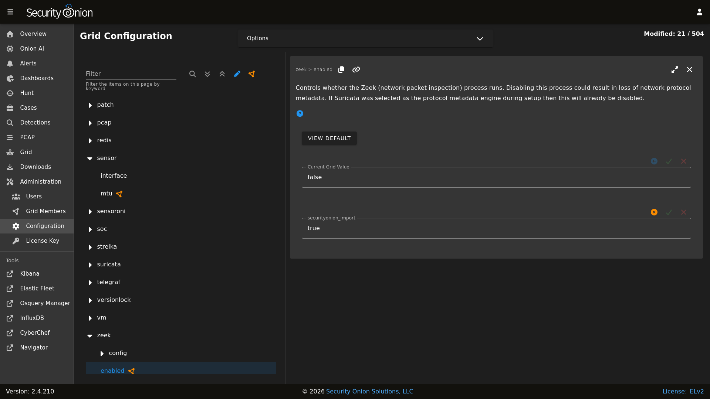

Zeek
Security Onion includes Zeek for network protocol analysis and metadata. From https://www.zeek.org/:
Zeek is a powerful network analysis framework that is much different from the typical IDS you may know. (Zeek is the new name for the long-established Bro system. Note that parts of the system retain the “Bro” name, and it also often appears in the documentation and distributions.)
Zeek logs are sent to Elasticsearch for parsing and storage and can then be found in Dashboards, Hunt, and Kibana. Here’s an example of Zeek logs in Hunt:

Community ID
Security Onion enables Zeek’s built-in support for Community ID.
Packet Loss and Capture Loss
Zeek reports both packet loss and capture loss and you can find graphs of these in InfluxDB. If Zeek reports packet loss, then you most likely need to adjust the number of Zeek workers as shown below or filter out traffic using BPF. If Zeek is reporting capture loss but no packet loss, this usually means that the capture loss is happening upstream in the TAP or SPAN port itself.
Configuration
You can configure Zeek by going to Administration –> Configuration –> zeek.
{kind=link}

Zeek logs are consumed by the Elastic Agent (managed by Elastic Fleet) so if you want to configure which Zeek logs are excluded, you can go to Administration –> Configuration –> elasticfleet –> logging –> zeek –> excluded.

HOME_NET
The HOME_NET variable defines the networks that are considered home networks (those networks that you are monitoring and defending). The default value is RFC1918 private address space (10.0.0.0/8, 192.168.0.0/16, and 172.16.0.0/12). You can modify this default value by going to Administration –> Configuration –> zeek –> config –> networks –> HOME_NET.
Performance
Zeek uses AF-PACKET so that you can spin up multiple Zeek workers to handle more traffic.
If you have multiple physical CPUs, you’ll most likely want to pin sniffing processes to a CPU in the same Non-Uniform Memory Access (NUMA) domain that your sniffing NIC is bound to. Accessing a CPU in the same NUMA domain is faster than across a NUMA domain.
Note
For more information about determining NUMA domains using lscpu and lstopo, please see https://github.com/brokenscripts/cpu_pinning.
You can modify Zeek worker count by going to Administration –> Configuration –> zeek –> config –> node –> workers.
Disabling
Zeek can be disabled by going to Administration –> Configuration –> zeek –> enabled.
Syslog
To forward Zeek logs to an external syslog collector, please see the Syslog Output section.
Logs
Zeek logs are stored in /nsm/zeek/logs. They are collected by Elastic Agent, parsed by and stored in Elasticsearch, and viewable in Dashboards, Hunt, and Kibana.
We configure Zeek to output logs in JSON format. If you need to parse those JSON logs from the command line, you can use jq.
Zeek monitors your network traffic and logs protocol metadata. Here are just a few examples.
conn.log
TCP/UDP/ICMP connections
For ICMP connections, ICMP type is logged as source port and ICMP code as destination port
For more information, see:
https://docs.zeek.org/en/latest/scripts/base/protocols/conn/main.zeek.html#type-Conn::Info
dns.log
DNS activity
For more information, see:
https://docs.zeek.org/en/latest/scripts/base/protocols/dns/main.zeek.html#type-DNS::Info
http.log
HTTP requests and replies
For more information, see:
https://docs.zeek.org/en/latest/scripts/base/protocols/http/main.zeek.html#type-HTTP::Info
ssl.log
SSL/TLS handshake info
For more information, see:
https://docs.zeek.org/en/latest/scripts/base/protocols/ssl/main.zeek.html#type-SSL::Info
notice.log
Zeek notices
For more information, see:
https://docs.zeek.org/en/latest/scripts/base/frameworks/notice/main.zeek.html#type-Notice::Info
Other Zeek logs
Zeek also provides other logs by default and you can read more about them at https://docs.zeek.org/en/latest/script-reference/log-files.html.
In addition to Zeek’s default logs, we also include protocol analyzers for STUN, TDS, and Wireguard traffic. We also include support for ICS/SCADA protocols such as BACnet, BSAP, CIP, COTP, DNP3, ECAT, ENIP, Modbus, OPC UA, Profinet, and S7. All of these analyzers are enabled by default and you can find corresponding dashboards for each of them in Dashboards.
We also include MITRE BZAR scripts and you can read more about them at https://github.com/mitre-attack/bzar. Please note that the MITRE BZAR scripts are disabled by default. If you would like to enable them, you can do so via Administration –> Configuration –> zeek. Once enabled, you can then check for BZAR detections by going to Dashboards and selecting the Zeek Notice dashboard.
As you can see, Zeek log data can provide a wealth of information to the analyst, all easily accessible through Dashboards, Hunt, or Kibana.
File Extraction
By default, Zeek will extract files from network traffic and Strelka will then analyze those extracted files.
Intel
You can add your own intel to /opt/so/saltstack/local/salt/zeek/policy/intel/intel.dat on the manager and it will automatically replicate to all sensor nodes. If the /opt/so/saltstack/local/salt/zeek/policy/intel/ directory is empty, you can copy the default files (both intel.dat and __load__.zeek) from /opt/so/saltstack/default/salt/zeek/policy/intel/ as follows:
sudo cp /opt/so/saltstack/default/salt/zeek/policy/intel/* /opt/so/saltstack/local/salt/zeek/policy/intel/
Please note that Zeek is very strict about the format of intel.dat. When editing this file, please follow these guidelines:
no leading spaces or lines
separate fields with a single literal tab character
no trailing spaces or lines
The default intel.dat file follows these guidelines so you can reference it as an example of the proper format.
When finished editing intel.dat, run sudo salt $SENSORNAME_$ROLE state.highstate to sync /opt/so/saltstack/local/salt/zeek/policy/intel/ to /opt/so/conf/zeek/policy/intel/. If you have a distributed deployment with separate sensor nodes, it may take up to 15 minutes for intel to sync to the sensor nodes.
If you experience an error, or do not notice /nsm/zeek/logs/current/intel.log being generated, try having a look in /nsm/zeek/logs/current/reporter.log for clues. You may also want to restart Zeek after making changes by running sudo so-zeek-restart.
For more information, please see https://docs.zeek.org/en/latest/frameworks/intel.html.
Diagnostic Logging
Zeek diagnostic logs can be found in /nsm/zeek/logs/. Look for files like reporter.log, stats.log, stderr.log, and stdout.log. Depending on what you’re looking for, you may also need to look at the Docker logs for the container:
sudo docker logs so-zeek
More Information
Note
For more information about Zeek, please see https://www.zeek.org/.